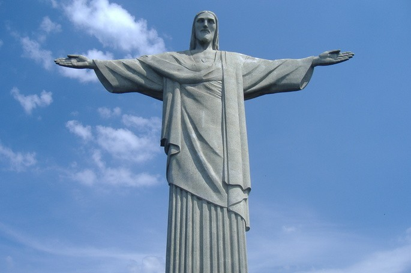

Cristo Redentor
En Río de Janeiro, ciudad emblemática del Brasil, se encuentra la estatua del Cristo Redentor,
conocida también como Cristo del Corcovado. Su importante valor simbólico ha promovido las peregrinaciones
de los católicos más devotos, pero también ha atraído la visita de los turistas deseosos de develar los misterios
de una de las siete maravillas del mundo moderno.
La imagen de Jesucristo corona la cima del monte Corcovado, ubicado en el Parque Nacional de la Tijuca. El monte alcanza
unos 710 metros sobre el nivel del mar. Allí, un pedestal de 8 metros soporta al Cristo Redentor con sus 30,1 metros de
altura y un peso de 1200 toneladas. Desde allí, el Cristo vigila la ciudad de Río de Janeiro y contempla el monte de Pão
de Açúcar.

Caracteristicas
La obra Cristo Redentor está concebida como una escultura monumental de estilo art déco. Este fue un estilo artístico internacional
ecléctico surgido en el período de entreguerras, es decir, entre 1920 y 1939 aproximadamente, si bien no tuvo nombre hasta
la década de 1960. Ejerció gran influencia en las bellas artes, pero especialmente en la arquitectura y las artes aplicadas.
Como tendencia, el art déco se caracterizaba por el refinamiento elegante y sensual; el lenguaje eclecticista e historicista;
el empleo de la línea recta; el uso del zig-zag y elementos geométricos, en particular el hexágono, el octágono y el cuadrado.
Eventualmente se aplicaban curvas y espirales, siempre que estuvieran sometidas al sentido geométrico y no a la asociación con
las formas de la naturaleza.